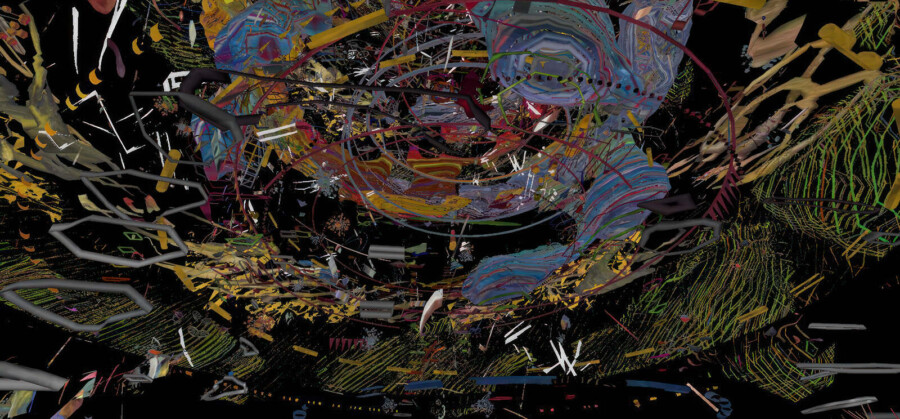

ONION CITY OPENING RECEPTION AT 150 MEDIA STREAM
The Onion City Experimental Film Festival opens on Thursday, April 9, 2026 with a digital art installation and reception in the lobby of 150 N. Riverside Plaza from 5:30pm to 7:30pm, hosted and sponsored by 150 Media Stream. Digital and new media artist Peter Burr, known for his large-scale installations in locales such as Times Square, will curate the lobby’s unique media wall. Burr’s Continuous Monument, commissioned by 150 Media Stream in 2021, will alternate with French animation artist Boris Labbé’s newly adapted work Ito Meikyū. Originally a VR work, Ito Meikyū, which premiered at the 2024 Venice International Film Festival, develops around references from Japanese art history and literature (the Fukinuki Yatai, The Tale of Genji, The Pillow Book) and unfolds as a large sensory fresco. A heterogeneous set of drawn, animated, and sound scenes are taken from digital material; they recreate a kind of subjective world (inner and outer) in the form of a labyrinth composed of fractal architectures, inhabited by plants, objects, animals, men, women, motifs, and calligraphy.
150 Media Stream will also present Ito Meikyū in its original VR format, offering visitors the rare opportunity to experience this interactive 20-minute artwork through a VR headset during the following time windows:
Wednesday, April 8, 11:30am – 1:30pm
Thursday, April 9, 11:30am – 1:30pm; 5:30pm – 7:30pm
The reception will be followed by Onion City’s opening night screening at the Gene Siskel Film Center — USEFUL FANTASY — a program of repertory animated works on 35mm and digital video curated by Burr.